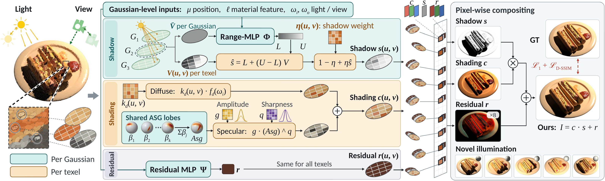

Abstract
Relightable Gaussian splatting combines explicit reconstruction with fast rendering under novel views and illumination. However, a single visibility value per Gaussian cannot preserve the spatial distribution of occlusion within its footprint. When a cast-shadow boundary crosses a Gaussian, illuminated and occluded regions are collapsed into a shared shadow response. We introduce LoFT-GS, a locally factorized relighting representation that addresses this limitation by recording visibility on a local texture grid within each 2D Gaussian during light-space splatting. A range-conditioned shadow formulation combines this local visibility with a Gaussian-level range predictor. More generally, LoFT-GS separates spatially varying relighting factors from shared Gaussian-level computation. Local texels represent visibility and diffuse appearance and modulate specular amplitude and sharpness, while geometry, base directional responses, and neural predictions remain shared per Gaussian. Experiments across diverse scenes demonstrate improved relighting fidelity over the evaluated baselines.
Method Overview
